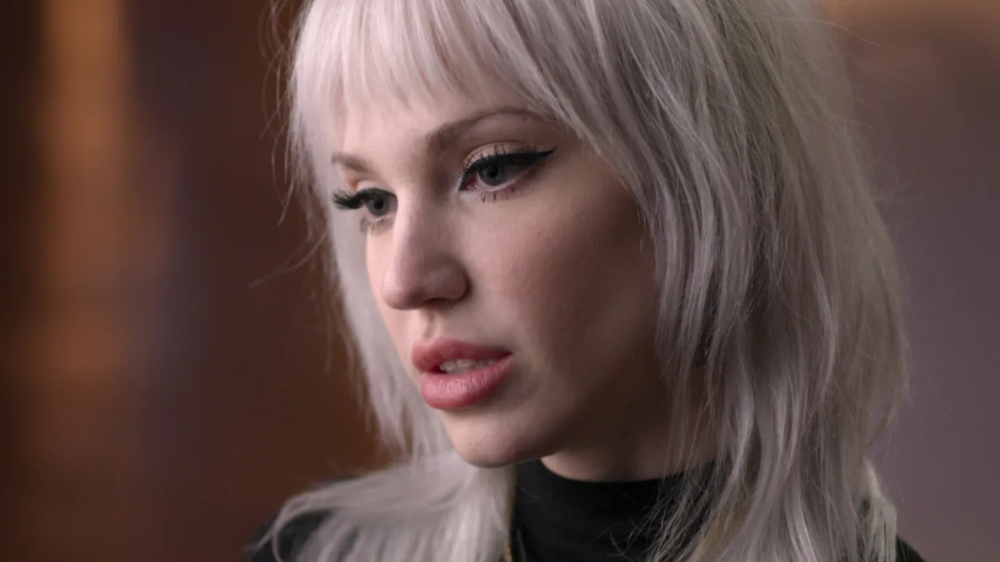
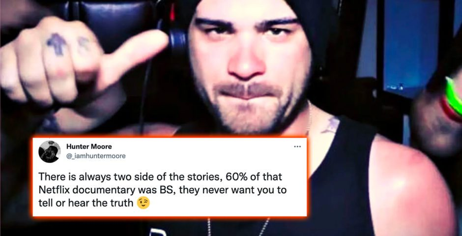

Overview
The Most Hated Man on the Internet follows anti-revenge porn activists in their efforts to take down the website IsAnyoneUp.com. Created by Hunter Moore, the website was built so anyone can post a picture of anyone and connect it to their social media accounts. Charlotte Laws started a campaign to try to take it down after her daughter's nude photos were shared on the website.
Hunter Moore, the self-styled "King of revenge porn" says ruining people's lives is just too much fun and he does not know what he'll do asides bullying victims. With his minions called "the Family" he also threatens victims and their family, but Charlotte Laws is persistent.
Reviews
The producers deliver a highly watchable if salacious
three-part docuseries, fueled by its truly hissable, made-for-TV villain.
–– Brian Lowry, CNN.com
I never heard of Hunter Moore and this story before, so everything was completely new and interesting to me. And so satisfying. At the same time it's really unsettling, how many fans he had. The fact that there are so many deranged people out there, willing to exploit and violate any vulnerable person or other creature they can get there hands on an, is scary. And if course all the gaslighting - how dare you take a picture of yourself and put in your own private e-Mail
account and then not expect it to be publicly exposed?
People are horrible, but luckily there are some who actually
care - and they got to speak in this show. I enjoyed it very much.
––Sofia G.
Compelling, if a bit limited in scope.
––Angie Han, Hollyhood reporter
Aftermath
Hunter Moore was only sentenced for 2 and a half years in prison, along with a fine of $2,000 and another $145 in victim restitution. The consequences were so little compared to the severity and depravity of his crimes, but were ruled this way because revenge porn and copyright on the internet were new concepts at the time and therefore did not have laws against them.
One of the victims, Kayla Laws is now a real estate agent. Kirra Hughes is now a recognized prop designer and model. Destiny Benedict is now an online adult content developer and has reconnected with her children.